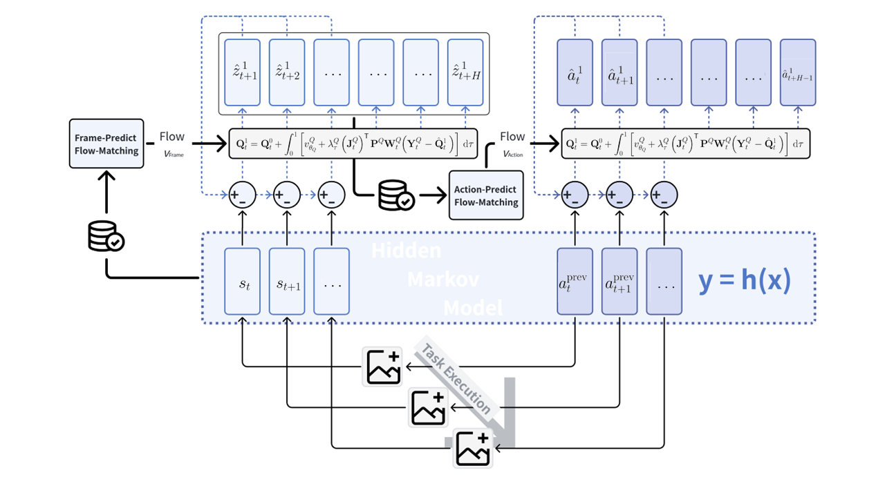
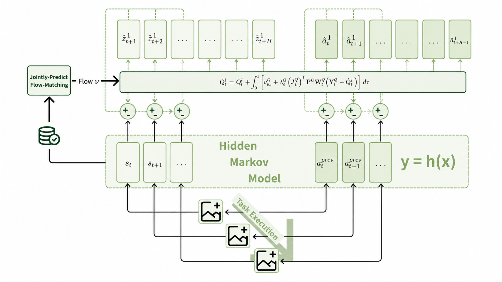
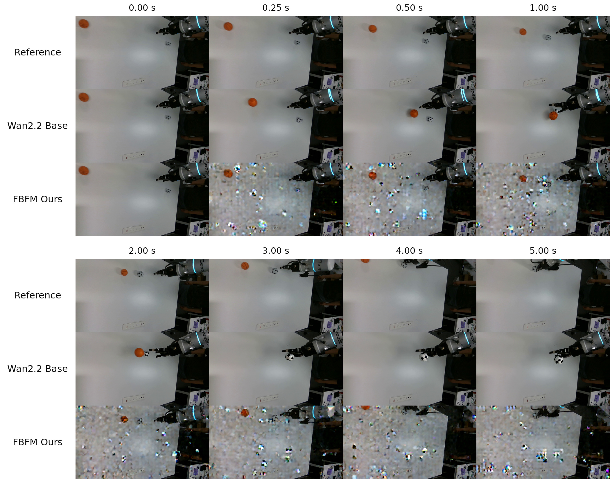

기존 World-Action Model(WAM)은 chunk 경계에서만 관찰을 재접지(re-ground)해 청크 내부의 편차가 누적된다. FBFM은 학습 없이 flow-matching 추론 도중 마스크된 pseudoinverse 보정을 통해 이미 실행된 앞 청크가 현재 생성 중인 청크를 실시간 제약하도록 만드는 비동기 피드백. 단일 인터페이스로 stage-wise(LingBot-VA)와 joint-generation(DreamZero) WAM 모두를 감쌀 수 있으며, RoboTwin2.0 성공률 80.1→83.1, LIBERO 총합 70.1→70.8, 실로봇 ball-stopping에서 관찰-예측 정합이 눈에 띄게 개선.
1배경 · 문제의식
WAM은 미래 상태(state)와 행동(action)을 함께 예측하며, 실행 효율을 위해 여러 스텝의 action을 한 번에 뽑아내는 action chunk 방식이 표준이다. 문제는 청크 내부에서는 실제 관찰이 재입력되지 않고, 청크가 끝난 뒤에야 다음 청크를 위한 관찰이 반영된다는 점이다. 이로 인해 (1) 청크 내부의 예측 오차가 누적되고, (2) 청크 경계에서 갑작스러운 재접지가 발생해 트래킹이 불안정해진다.
기존 WAM에서 이런 청크 내부 편차를 잡으려면 재학습, guided-generation loss 삽입, 또는 청크 길이를 줄이는 편법이 필요했다. 저자들은 학습을 전혀 건드리지 않고, 추론 도중의 velocity field에 개입해 상태-행동을 동적으로 재정렬할 수 있는 방법을 찾는다.
2핵심 Contribution
Training-Free 청크 내부 재접지 — flow-matching 추론 단계에서 관찰·행동을 조건화하는 masked pseudoinverse guidance를 도입해, 이미 실행된 앞 청크와 실측 관찰이 현재 생성 중인 청크의 상태 및 행동을 실시간 제약.
Unified stage-wise / joint-generation 인터페이스 — LingBot-VA(state를 먼저 굴리고 action을 붙이는 stage-wise WAM)와 DreamZero(state·action을 한 flow에서 함께 생성하는 joint WAM) 두 계열을 동일한 형식으로 지원.
추가 학습·데이터 없이 성능·안정성 개선 — RoboTwin2.0 dual-arm 태스크에서 +3%p, LIBERO에서 총합 소폭 상승, 실로봇 ball-stopping 시퀀스에서 예측·관찰 프레임의 정합도가 뚜렷하게 향상.
3Method
WAM 두 계열의 청크 실행 구조
Stage-wise WAM (LingBot-VA): 시간축을 따라 미래 상태를 먼저 flow로 풀고, 그 상태를 조건으로 action을 뽑는다. 문제는 상태 flow가 청크 내부에서 새 관찰을 절대 참조하지 않아, 청크가 길어질수록 실측 대비 표류(drift)한다. Joint-generation WAM (DreamZero): 하나의 flow 안에서 state·action을 함께 생성한다. 청크 내부의 재접지가 근본적으로 없다는 점은 stage-wise와 동일.
Masked Pseudoinverse Guidance (핵심 식)
Guided velocity field: vFBFM = v̄ + λ · JT · P · W · (Y − Q̂1)
· v̄: 모델이 원래 뱉는 native velocity field
· Y: target (실측된 관찰 or 이미 실행 완료된 앞 청크의 action)
· Q̂1: 현재 flow가 t=1에서 예측하는 endpoint state/action
· W: 마스크 (어떤 시점·모달리티만 재접지할지)
· JT: endpoint의 자코비안 전치 → pseudoinverse 방향 보정
· P, λ: 스텝별 스케일링/투영
즉, flow가 목표하는 종점 상태(Q̂¹)가 실측 관찰(Y)과 어긋난 정도를 자코비안을 타고 velocity에 되먹여, 남은 ODE 스텝을 재접지된 궤적으로 이끈다. 학습된 파라미터는 손대지 않고 추론 스텝의 v만 바꾼다.
Stage-wise vs Joint 두 그림
stage-wise에서는 관찰 인코딩이 state flow의 앞부분 스텝을 점진적으로 constrain하고(그림 1), joint에서는 관찰 피드백 + 확정된 action이 state-action flow를 동시에 constrain한다(그림 2). 어느 쪽이든 이미 확정된(=실행된) 값은 hard-fix, 아직 생성 중인 값은 guidance로 soft-shape.
Asynchronous 실행
중요한 점은 앞 청크의 action이 실제 로봇에서 실행되며 새 관찰을 뱉는 도중에 다음 청크를 미리 flow로 굴린다는 것. 그렇게 확보된 시간 안에서 실측 관찰이 도착할 때마다 velocity에 즉시 반영하기 때문에 latency 손해 없이 재접지가 가능하다.
4실험 결과
LingBot-VA on RoboTwin2.0 (stage-wise, 표 1)
방법
Clean
Randomized
Overall
Base
80.5
79.8
80.1
+ FBFM
83.3
82.9
83.1
청소 조건과 randomized (외란) 조건 모두에서 +3%p 안팎. 학습 없이 얻은 이득이라는 점이 핵심.
DreamZero on LIBERO (joint-generation, 표 2)
방법
Spatial
Object
Goal
L-10
Total
Base
78.5
73.0
68.5
60.5
70.1
+ FBFM
77.0
72.0
71.0
63.0
70.8
Goal·L-10처럼 장기 태스크에서 +2.5~3%p, Spatial·Object처럼 짧은 태스크에선 소폭 손해. 저자의 주장(장기 청크에서 이득)과 부합.
실로봇 ball-stopping (그림 4)
RealSense D435i로 촬영된 실 로봇팔이 공을 정지시키는 시퀀스에서 FBFM 예측 프레임이 실측 프레임과 훨씬 잘 정합. Base는 청크 중반부터 예측이 실제 진행보다 앞서 나가거나 뒤처지는 반면 FBFM은 실측과 함께 움직인다(정성적).
5Ablation / Mechanism 진단
Wave-0 latent MSE가 청크 실행 도중 급감. 즉 마스크된 pseudoinverse 항이 flow 초반부터 target에 맞춰 궤적을 정렬함이 정량적으로 확인.
Cache switching effect: 실측 관찰이 도착해 캐시가 갱신되는 순간 velocity RMS가 즉각 반응 → 피드백 loop가 실제로 flow에 반영됨.
λ·마스크 스케줄이 크면 그림 3처럼 endpoint Jacobian 방향의 강한 보정이 걸리고, 작으면 native flow에 가깝게 유지 — 튜닝 가능한 soft-constraint임을 강조.
6핵심 Figure / Table

Figure 1 — FBFM for a stage-wise WAM. 앞 청크가 실행되는 동안 새로 인코딩된 관찰이 다음 청크의 state flow를 점진적으로 constrain한다. (출처: arXiv:2607.29235)

Figure 2 — FBFM for joint-generation WAM. state·action이 하나의 flow에서 함께 생성되는 계열에서 state feedback과 이미 확정된 action이 동일 flow를 동시에 constrain. (출처: arXiv:2607.29235)

Figure 4 — 실로봇 ball-stopping. RealSense D435i 프레임 시퀀스 위에서 Base 예측(위)과 FBFM 예측(아래)의 정합도를 비교. FBFM 쪽이 실측 진행과 훨씬 잘 맞는다. (출처: arXiv:2607.29235)
Table 1이 핵심 주장의 정량 근거: LingBot-VA 기반 RoboTwin2.0에서 학습 없이 +3.0%p. joint-generation 계열(DreamZero)에서는 장기 태스크(Goal·L-10)에서만 이득이라는 점이 method의 "긴 청크에서 재접지가 유효"라는 주장과 정확히 일치.